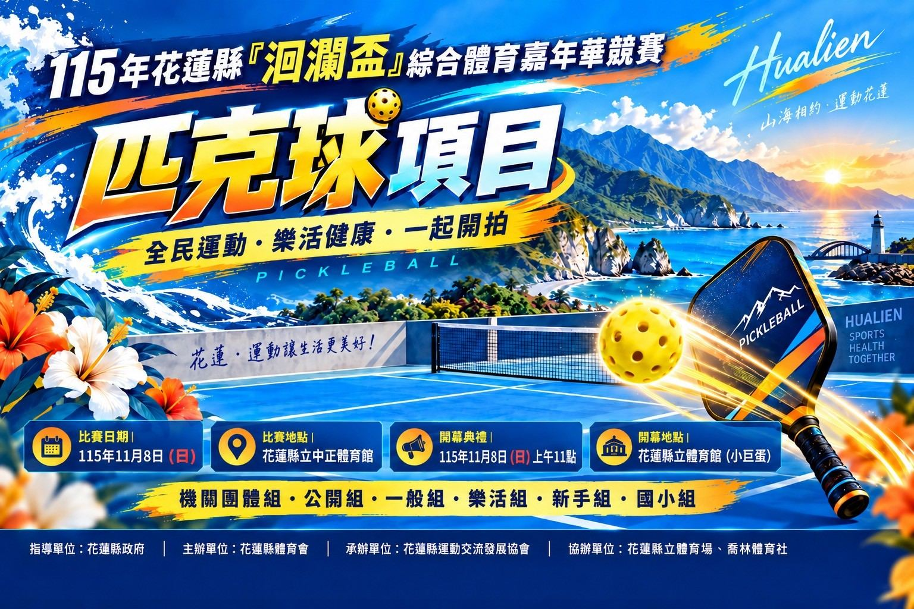

使用者提供的洄瀾盃匹克球項目海報，標示比賽地點為花蓮縣立中正體育館，列有機關團體組、公開組、一般組、樂活組、新手組與國小組。賽程、組別資格與報名資訊請查看賽事資訊查詢系統。
比賽日期為 115 年 11 月 8 日（星期日）。賽程、組別與報名細節請以賽事資訊查詢系統為準。
海報由球友提供；HLPB 為資訊整理站，並非賽事主辦單位。
最後查證：2026-09-28｜資料來源：球友提供海報、賽事查詢系統連結
返回最新消息2026 年 11 月 8 日（星期日）於花蓮縣立中正體育館舉行。海報列有機關團體、公開、一般、樂活、新手與國小組；組別資格、賽程及報名狀態請以賽事查詢系統為準。

使用者提供的洄瀾盃匹克球項目海報，標示比賽地點為花蓮縣立中正體育館，列有機關團體組、公開組、一般組、樂活組、新手組與國小組。賽程、組別資格與報名資訊請查看賽事資訊查詢系統。
比賽日期為 115 年 11 月 8 日（星期日）。賽程、組別與報名細節請以賽事資訊查詢系統為準。
海報由球友提供；HLPB 為資訊整理站，並非賽事主辦單位。
最後查證：2026-09-28｜資料來源：球友提供海報、賽事查詢系統連結
返回最新消息